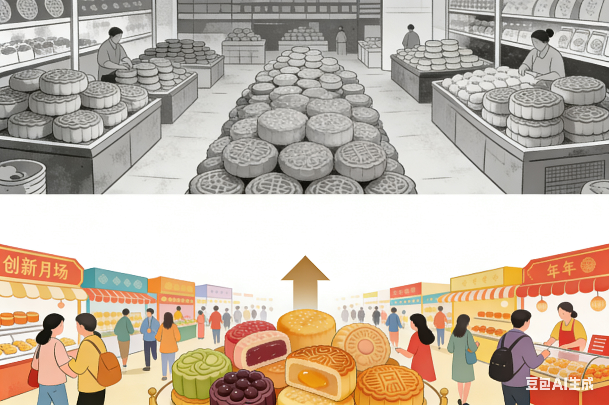
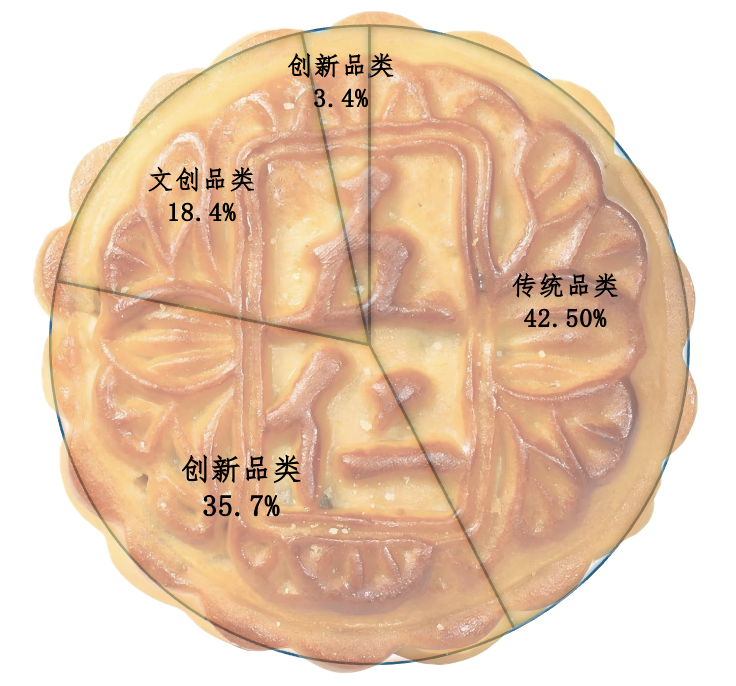

以低糖、低脂为卖点的健康品类，已悄然占据18.4%的市场，成为最具潜力的增长极。
同时，消费者正为“文化味”买单——融合非遗、IP元素的文创月饼，虽然份额仅3.4%，却以高话题度展现出最迅猛的增长势头。中研网数据显示，在300元以上的礼盒中，文化主题产品的单价可达常规款的2.3倍。
市场格局正从“一家独大”转向“三分天下”。传统品类（如五仁、豆沙）以42.5%的份额守成，而创新品类（如流心、冰皮）则以35.7%的份额，成为驱动增长的真正引擎。

又到中秋，但月饼市场却弥漫着一丝不同寻常的气息。行业数据显示，2020年来，市场规模稳步扩大，2025年预计达到325亿元。然而，今年节前月饼礼盒的销售额竟同比骤降45.17%。这个看似矛盾的现象并非市场萎缩的信号，它揭示了月饼作为传统商品的转型之路。
驱动这场变革的，是来自政策与消费者的双重压力。
一方面，国家多部门自2022年起持续对单价超过500元的“天价月饼”进行重点监管，要求信息透明、包装从简，从源头上遏制了奢华礼盒的流通。
另一方面，消费者心态也在回归理性，“实用”、“健康”取代了“面子”和“攀比”。曾经动辄千元的月饼风光不再，零售渠道反馈，今年卖得最好的，是单价仅约5元的散装月饼。
市场趋势正被改写。如今，决定一块月饼价值的，不仅是馅料，更是其背后能否满足新一代消费者对健康低糖的追求，或是在社交媒体上引发讨论的新奇口味。
转型的密码，藏在消费者画像中。
数据显示，女性以约68.4%的占比，成为月饼消费的绝对决策核心，是男性群体的两倍。
而从年龄看，31-40岁的中青年家庭支柱是主力，他们既看重仪式感，也关心成分表。
在女性主导、家庭导向的月饼消费画像，塑造了市场“品质与情感”并重的双引擎。
以低糖、低脂为卖点的健康品类，已悄然占据18.4%的市场，成为最具潜力的增长极。
同时，消费者正为“文化味”买单——融合非遗、IP元素的文创月饼，虽然份额仅3.4%，却以高话题度展现出最迅猛的增长势头。中研网数据显示，在300元以上的礼盒中，文化主题产品的单价可达常规款的2.3倍。
市场格局正从“一家独大”转向“三分天下”。传统品类（如五仁、豆沙）以42.5%的份额守成，而创新品类（如流心、冰皮）则以35.7%的份额，成为驱动增长的真正引擎。

这种从“吃奢侈”到“品文化”的转变，深层动力源于消费场景与人群的变迁。家庭团圆仍是月饼消费的核心场景，抖音电商数据显示，“家有儿女”群体是市场份额最稳固的基本盘。
而市场的活力与未来，则显著依赖于年轻消费者。“新锐白领”与“小镇青年”不仅贡献了可观的销量，其超前的购买倾向也使其成为最值得关注的群体。正是他们对新鲜事物的热衷和社交分享，不断倒逼产品创新，为这个传统市场注入了关键的活力。
产品的革新只是故事的一半。要真正“破局”，还需借助销售渠道升级与全球化输出的“双翼”。
线下渠道因其即得性及传统的节令购物习惯，依然稳固地占据 53.6% 的市场销售基本盘。其中，深入社区、方便一站式购物的商超是线下核心，贡献了32.4%的销售额。同时，线上渠道已从“辅助”变为“主阵地”，尤其是抖音等内容平台，正通过直播与短视频重塑购买场景。线上与线下构成了满足不同消费场景、相互补充的立体渠道网络，共同支撑起市场的繁荣。
与此同时，月饼的“出海”步伐也在加快。中国海关数据显示，开展月饼出口业务的企业从2024年的80家猛增至2025年的120家，日均出口运力增长超过三分之一。
在中国文化全球影响力不断提升的背景下，月饼作为富含团圆寓意的独特文化符号，其“出海”之路正迎来前所未有的机遇。
2025年月饼市场规模的扩张，其深层动力源于产品本身契合新型消费观——“面子消费”到“里子消费”的价值回归。而销售渠道的升级与全球市场的开拓，则为产业装上了“双翼”，从渠道与空间两个维度拓宽了市场的边界，为月饼注入新的增长活力。这一古老节日符号，正在焕发出属于这个时代的新活力。